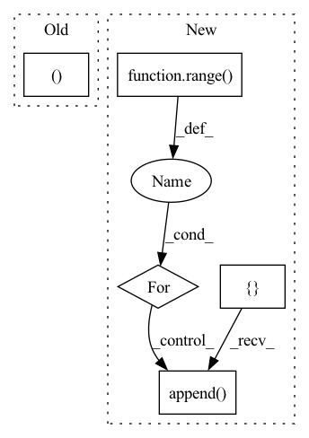

Pattern ID :151

Before Change
// Upsampling convolutional layer.
self.upsampling = nn.Sequential(
nn.Conv2d(64, 64, (3, 3), (1, 1), (1, 1)),
nn.LeakyReLU(0.2, True)
)
After Change
)
// Upscale block
upsampling = []
for _ in range(2):
upsampling.append(UpsampleBlock(64))
self.upsampling = nn.Sequential(*upsampling)
// Output layer.
self.conv_block3 = nn.Conv2d(64, 3, (9, 9), (1, 1), (4, 4))
In pattern: SUPERPATTERN
Frequency: 3
Non-data size: 5
Instances
Fragment ID: 679178
Project Name: lornatang/esrgan-pytorch
Commit Name: a9031d71f6f27449fe63ec703344577e35fa87cb
Time: 2022-04-15
Author: liuchangyu1111@gmail.com
File Name: model.py
M Class Name: Generator
N Class Name: Generator
M Method Name: __init__(1)
N Method Name: __init__(1)
M Parent Class: nn.Module
N Parent Class: nn.Module
M File Name: model.py
N File Name: model.py
M Start Line: 149
M End Line: 173
N Start Line: 120
N End Line: 147
'>
Before Change
nn.Conv2d(64, 256, (3, 3), (1, 1), (1, 1)),
nn.PixelShuffle(2),
nn.PReLU(),
nn.Conv2d(64, 256, (3, 3), (1, 1), (1, 1)),
nn.PixelShuffle(2),
nn.PReLU(),
)
After Change
)
// Upscale block
upsampling = []
for _ in range(2):
upsampling.append(UpsampleBlock(64))
self.upsampling = nn.Sequential(*upsampling)
// Output layer.
self.conv_block3 = nn.Conv2d(64, 3, (9, 9), (1, 1), (4, 4))
'>
Fragment ID: 679176
Project Name: lornatang/srgan-pytorch
Commit Name: 2c11f14c44490604941be00d7661b19ad8f96597
Time: 2022-02-14
Author: liuchangyu1111@gmail.com
File Name: model.py
M Class Name: Generator
N Class Name: Generator
M Method Name: __init__(1)
N Method Name: __init__(1)
M Parent Class: nn.Module
N Parent Class: nn.Module
M File Name: model.py
N File Name: model.py
M Start Line: 127
M End Line: 134
N Start Line: 143
N End Line: 146
'>
Before Change
def __init__(self, in_channels, growth_rate, kernel_size, stride=(1,1), hidden_channels=128):
super().__init__()
self.kernel_size, self.stride = kernel_size, stride
self.bottleneck_conv2d = nn.Conv2d(in_channels, hidden_channels, kernel_size=(1,1), stride=(1,1))
self.conv2d = nn.Conv2d(hidden_channels, growth_rate, kernel_size=kernel_size, stride=stride)
After Change
def __init__(self, in_channels, out_channels, growth_rate, kernel_size, stride=(1,1), hidden_channels=128, num_layers=3, eps=EPS):
super().__init__()
net = []
num_features = in_channels
for idx in range(num_layers):
net.append(DenseLayer(num_features, growth_rate, kernel_size, stride=stride, hidden_channels=hidden_channels, eps=eps))
num_features += growth_rate
self.net = nn.Sequential(*net)
self.transition2d = Transition2d(num_features, out_channels, eps)
'>
Fragment ID: 679173
Project Name: tky823/dnn-based_source_separation
Commit Name: 779ca38784a602f9b13a9249eeb63612239a0ec1
Time: 2021-03-11
Author: 40362510+tky823@users.noreply.github.com
File Name: src/models/densenet.py
M Class Name: DenseBlock
N Class Name: DenseBlock
M Method Name: __init__(9)
N Method Name: __init__(6)
M Parent Class: nn.Module
N Parent Class: nn.Module
M File Name: src/models/densenet.py
N File Name: src/models/densenet.py
M Start Line: 14
M End Line: 17
N Start Line: 47
N End Line: 59